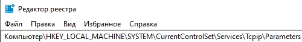
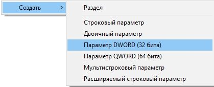
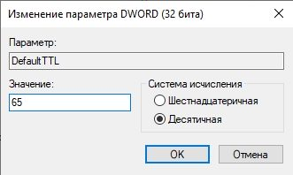

1. Зажимаем сочетание клавиш Windows+R, чтобы вызвать окно "Выполнить".
2. в появившимся окне вводим команду "regedit" и жмем Enter, чтобы перейти в "Редактор реестра".
3. В редакторе реестра "идем" по следующему пути: HKEY_LOCAL_MACHINE\SYSTEM\CurrentControlSet\services\Tcpip\Parameters

4. Здесь мы создаем параметр DWORD (32 бита).

5. Изменяем "имя" параметра на "DefaultTTL".
6. Щелкаем правой кнопкой мыши по данному параметру и выбираем пункт "изменить"
7.В открывшимся окне вписываем "65" в графу "Значение", а систему исчисления изменяем с шестнадцатеричной на десятичную. Жмем "ОК".

8. Те же действия проделываем по пути HKEY_LOCAL_MACHINE\SYSTEM\CurrentControlSet\services\TCPIP6.
9. ОБЯЗАТЕЛЬНО ПЕРЕЗАГРУЖАЕМ КОМПЬЮТЕР!
10. Пользуемся своим интернетом по-человечески.
Также стоит отметить, что если в вашем компьютере нет Wi-fi модуля, то просто присоедините свой смартфон к ПК через комплектный шнур с выходом на USB, а в настройках смартфона в разделе "Подключение и общий доступ" (этот раздел может иметь и другие наименования, я говорю вам на примере своего сяоми) стоит активировать режим USB-модема.
Имейте ввиду, что если вы используете телефон с OC Windows, то TTL стоит вписывать равный 130, а не 65. Если вдруг ничего не заработает, то попробуйте значение 129.
Данный способ актуален для тарифов с безлимитным интернетом.